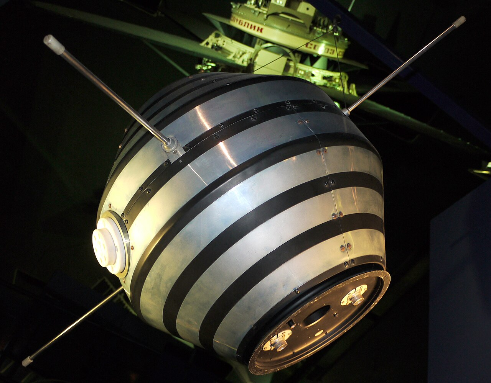

1965 — Francja wynosi satelitę Astérix
26 listopada 1965 roku Francja wyniosła rakietą Diamant-A satelitę Astérix, stając się trzecim państwem świata — po ZSRR i USA — z własnym satelitą na orbicie. Start odbył się z poligonu Hammaguir na terenie Algierii. Satelita zawdzięcza nazwę bohaterowi francuskiego komiksu o dzielnym Galu.
